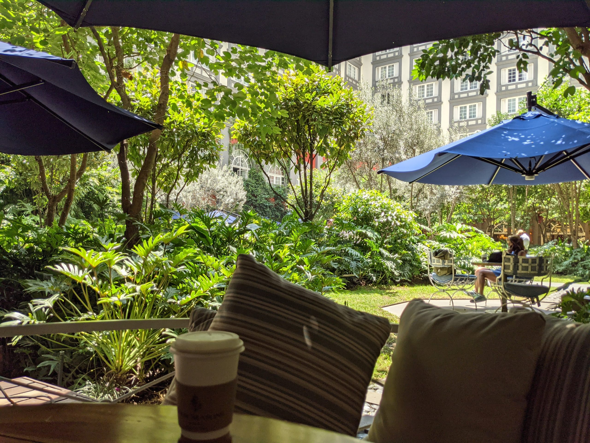
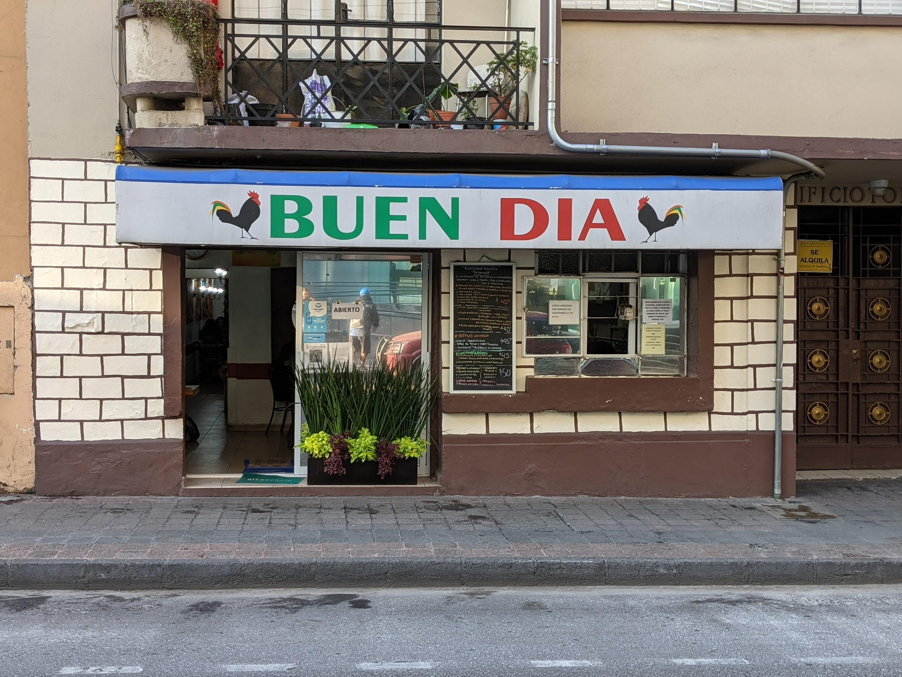
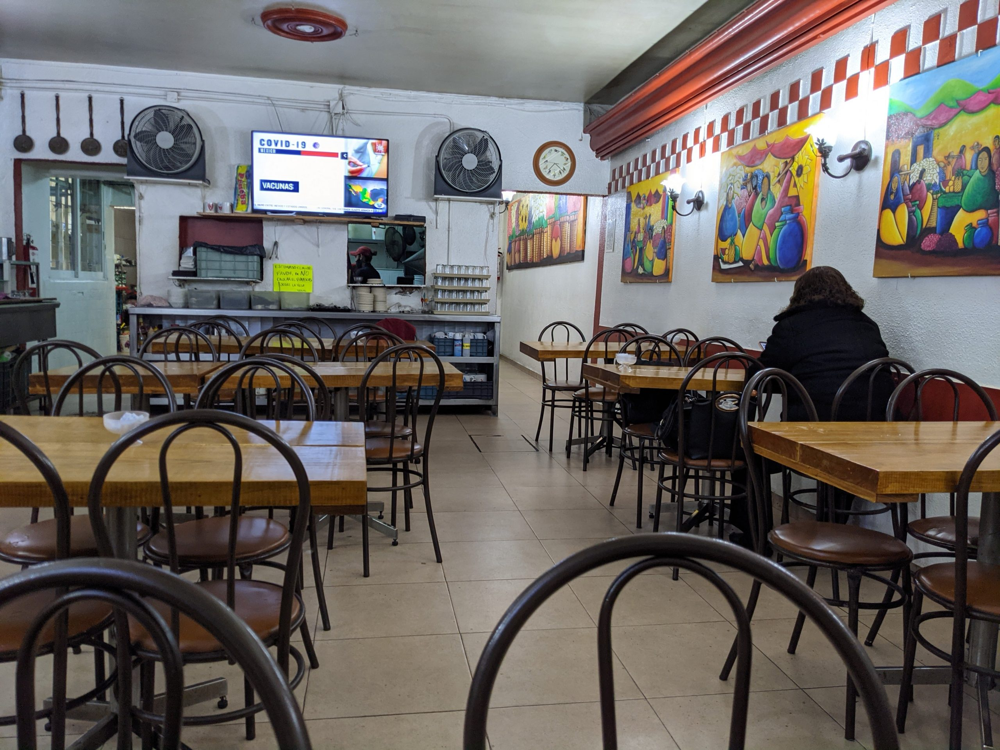
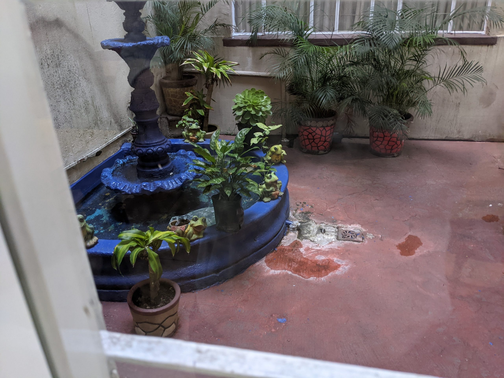
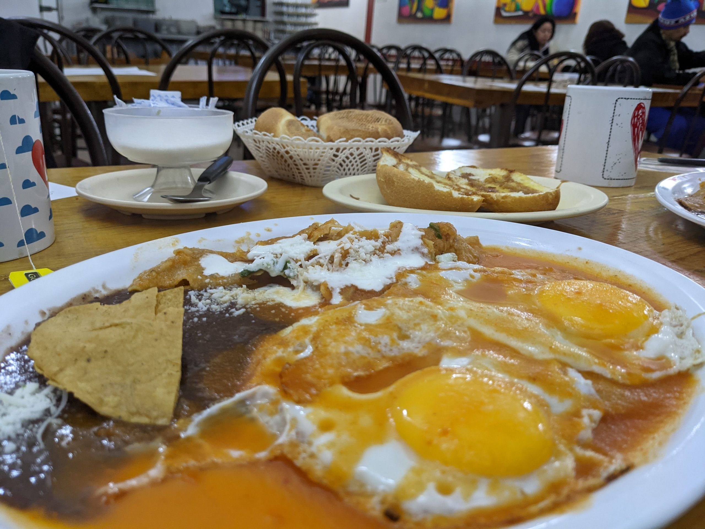
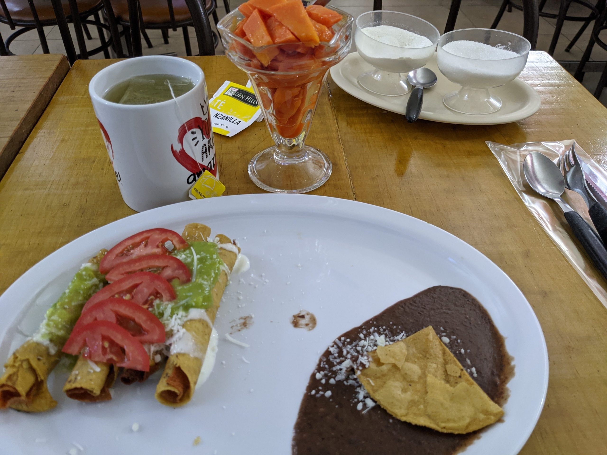

メキシコの首都、メキシコシティ―でノマドワーク
2021年の夏のこと。勤務する会社からの要請で会議に出席する必要があり、メキシコに最低でも2週間の予定で滞在することになった。
出席しなければならない会議は毎日ではないので、基本的にはメキシコシティ滞在のリモートワークとなる。
入国審査の途方もなく長い列に疲れ切って夜遅くフォーシーズンズホテルにチェックインした。
メキシコの建物はロの字型に中庭がある造りになっていることが多い。フォーシーズンホテルの中庭はよく手入れのされた外観からは想像できないほどの緑あふれる空間に仕上がり、訪れる人を魅了している。
↓フォーシーズンズホテルの中庭

次の日の朝、ホテル自慢の中庭に魅せられ、庭に面したレストランでスモークサーモンが添えられたアボカドトーストとコーヒーといった朝食をとった。物価の安いメキシコのこと、高級ホテルとはいえそれほどまではいくまいとたかをくくってたのが甘かった。食後にきた請求書の目玉がとびでそうな金額に、フライト疲れでぼーっとした頭が一気に目覚めた。メキシコ通貨から換算してみると、8000円近くもするではないか。まずい、このままでは破産してしまう。
そうしてみつけたのが、ホテルの近所にある地元のひとが通う庶民的食堂で、テラスで優雅に朝食をとる富裕層を尻目に、いそいそとホテルをでて、ここで朝食を食べるのが平日の朝の日課となった。


↓レストランの中庭部分

↓朝食セット。飲み物とフルーツが付いて40ペソ。一人分２００円ちょっと。長期滞在者にはありがたい金額。


コーヒーはインスタントコーヒーなのでお茶を頼む。カモミールティーが選べる。メキシコではカモミールティーがよく飲まれている。生水を飲むとお腹を壊すので、水かわりにハーブティーを飲むのだ。コーヒーはホテルの部屋にネスプレッソマシーンがあるので自分で淹れてそれを飲む。部屋の窓を大きくあけはなし、窓辺にたたずみ眺めとともに淹れたての濃いエスプレッソを堪能する。♪ダバダー ダーバ ダバダー♪
↓ホテルの部屋からの眺め。
中庭に面したコーヒーショップのテラス席が居心地よいので、J次郎は気分転換に部屋からでてここで仕事をするのがお気に入りだった。それ以外はホテルのレストランを利用することは滞在中一度もなかった。